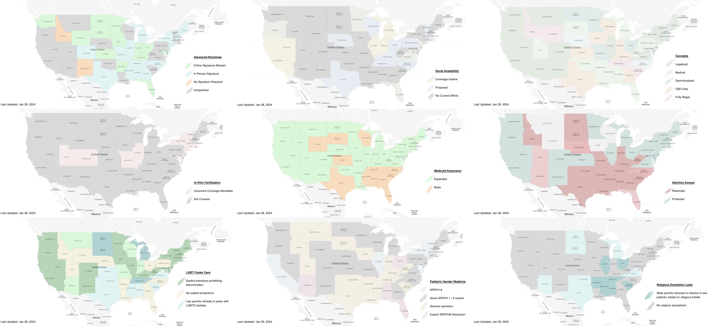

0.4.0 - ci-build
USStateProfiles - Local Development build (v0.4.0). See the Directory of published versions
| Official URL: https://gitlab.mitre.org/awatson/us-state-profiles/ImplementationGuide/mehi.ig.fhir | Version: 0.4.0 | |||
| Draft as of 2023-03-28 | Computable Name: USStateProfiles | |||
Modern clinical information systems are regulated by various laws, including (but not limited to) HIPAA, GDPR, and 21st Century Cures. These laws range specifying how many signatures are required for advanced directives, to laws prescribing expectations of patient privacy, to religious exemptions for clinicians from practicing certain types of medicine on the other, to whether LGBT members may participate in the adoption and foster care systems.

The purpose of this guide is to outline a format for encoding these laws using Fast Healthcare Interoperability Resources, so that healthcare systems can exchange information about the jurisdictional environment that data was collected in and will be used in. The intent is to eventually provide something akin to USCore for the various US states and territories. Thus, one might have an Illinois Core, or a Texas Core, or any of the other states. And within that core profile for the state, would be encoded descriptions of various state laws that may impact the delivery of healthcare or the modeling of health data in that state.
Following this logic, one may deduce that the areas where such data modeling will be relevant are issues where there is disagreement between states, and therefore represent cultural hot-topics. As such, this guide serves a dual purpose. With these state profiles in hand, mappings can then be created, so as to translate health records from one environment to another, and thereby ease tensions and friction between regions that have different cultural values and priorities.
This implementation guide introduces an approach to jurisprudence interpretation that may be somewhat novel. For the purposes of this implementation guide, and the systems that will use the profiles and artifacts it documents, this guide chooses to use the FHIR Consent resource to model state laws. This approach was chosen for the following reasons:
policy.authority field which explicitly specifies a jurisdictional body, such as a State or City.provision field, which allows arbitrarily deep inclusion/exclusion provisions with permit/deny rules, which is flexible enough to encode most of the laws that are relevant to practice healthcare.With these constraints guiding this data modeling decision, we therefore arrive at the notion of a US State participating as an actor in the provision of healthcare, and consenting to particular activities taking place within its borders. In particular, we would encourage implementers to look at Citizens United and other case law which confers personhood on organizations. The rational being that a collection of individuals has the same rights as any single individual, due to it being comprised of those members with those rights in the first place. A democratically elected body such as a state legislature is even more explicitly so.
And so, therefore, the notion is as follows: the state Consent record represents the society of individuals who live in a geographic area consenting that a particular activity may occur within their jurisdiction per the democratic legislative process.
This may be a novel jurisprudence interpretation. If using the Consent resource is truly egregious from a legal perspective, this implementation guide can either use the Base resource or define a new Logical Model or Resource, and copy the needed fields over and create a new resource if need be.
But for the purposes of expediency, we have chosen to use existing terminology where we can, and are starting with this data modeling approach.
For project maintenance, please contact:
Abigail Watson awatson@mitre.org
For community help, please post questions on Zulip:
https://chat.fhir.org/
© 2022 The MITRE Corporation.